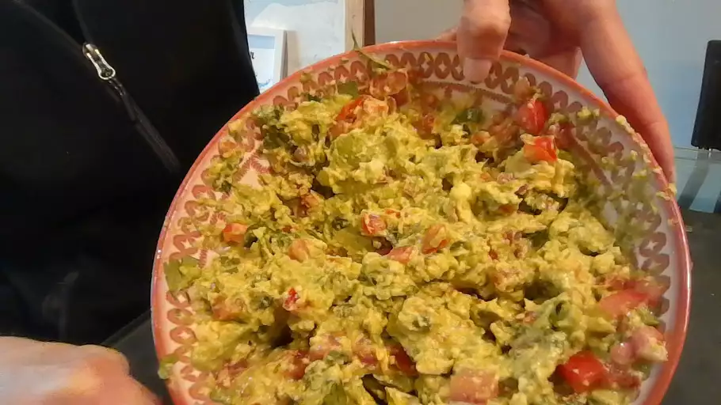

Guacamole is an avocado-based dip or spread that originated in Mexico. It's typically made with mashed avocado and lime juice, then seasoned with salt and cilantro. Guacamole often contains tomatoes and onions.
These are the ingredients you'll need to prepare it:
It couldn't be easier to make restaurant-worthy guac at home: